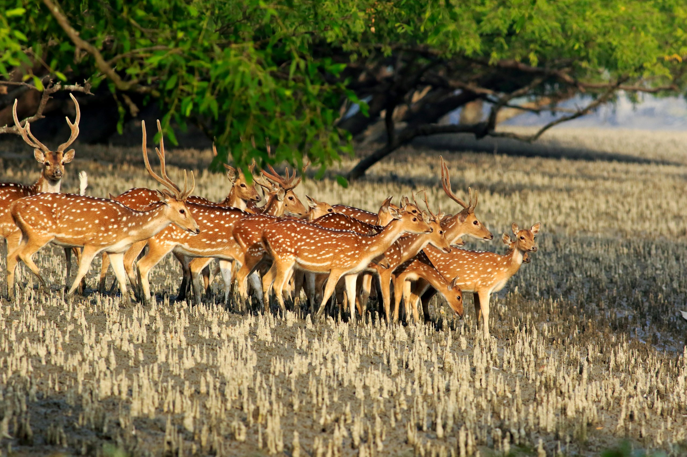

The Mangrove Forest
Mangrove forests are unique coastal ecosystems found in tropical and subtropical regions around the world. These forests are characterized by the presence of salt-tolerant trees, shrubs, and other vegetation that grow in intertidal zones, where land meets the sea. Here are some key features and characteristics of mangrove forests:
Salt-tolerant vegetation: Mangrove trees and plants have special adaptations to survive in salty water. They can filter out salt from the water they absorb and excrete it through their leaves or concentrate it in older leaves that are shed.
Root systems: Mangrove trees have complex root systems that help them stabilize in the muddy, shifting substrate of coastal areas. These roots also serve to anchor the trees and provide support against strong winds and waves. Some mangrove species have pneumatophores, specialized roots that protrude above the water's surface to facilitate gas exchange in waterlogged soils.
Biodiversity: Mangrove forests are incredibly rich in biodiversity, supporting a wide variety of plant and animal species. They serve as nurseries and breeding grounds for many marine species, including fish, crustaceans, and mollusks. Birds, reptiles, and mammals also depend on mangroves for habitat and food.
Protection against erosion and storms: The dense root systems of mangrove trees help stabilize coastal sediments, reducing erosion caused by waves and currents. Mangroves also act as natural buffers against storm surges and tsunamis, helping to protect coastal communities from the impacts of extreme weather events.